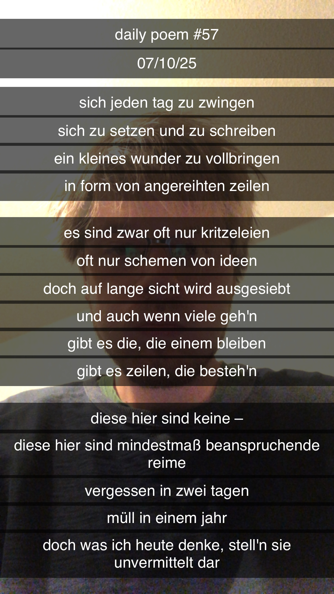

Mindestmaß beanspruchende Reime
[57]Sich jeden Tag zu zwingen
Sich zu setzen und zu schreiben,
Ein kleines Wunder zu vollbring'n
In Form von angereihten Zeilen –
Es sind zwar oft nur Kritzeleien,
Oft nur Schemen von Ideen –
Doch auf lange Sicht wird ausgesiebt,
Und auch wenn viele geh'n –
Gibt es die, die einem bleiben,
Gibt es Zeilen, die besteh'n.
Diese hier sind keine –
Diese hier sind Mindestmaß beanspruchende Reime;
Vergessen in zwei Tagen –
Müll in einem Jahr –
Doch was ich heute denke, stell'n sie unvermittelt dar.
